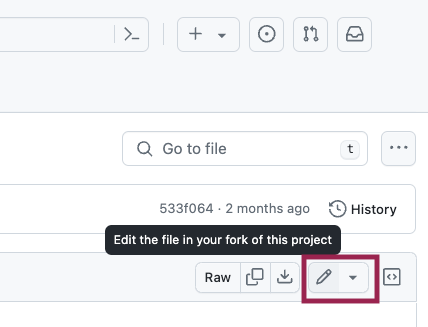
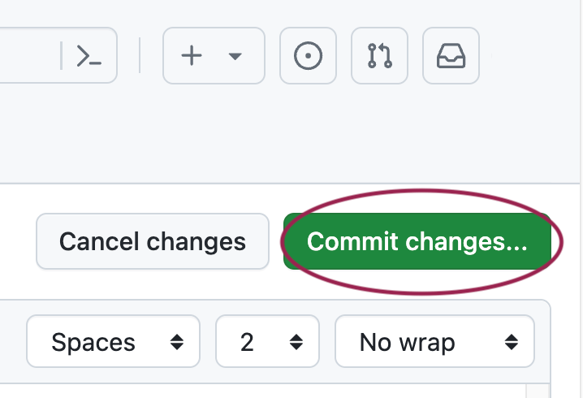
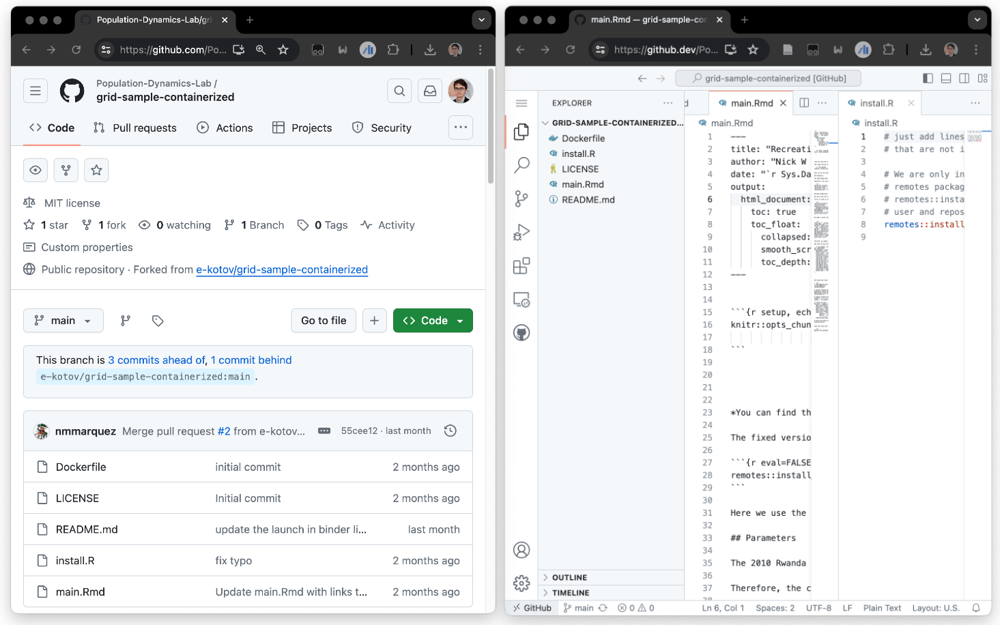
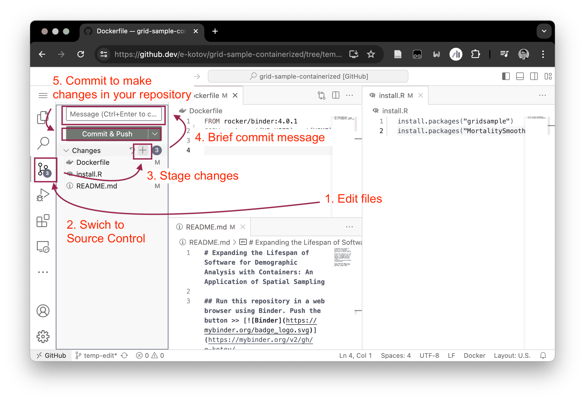

1. Make your own repository reproducible in Binder
First, make sure you got familiar with how Docker containers work.
The Goal
Create your own repository for a hypothetical research project. Make it future proof with a Docker container that can be run in the cloud using Binder. Imagine, that for this project you need 1 or 2 R packages that were archived from CRAN and are not available in the Rocker container image.
To achieve this goal, find a few archived R packages on CRAN. A few notable examples are rgdal, MortalitySmooth and many others. Remember, “40% of all packages ever in CRAN got at one point archived”1. CRAN does not have it’s own section with archived packages, so you might want to look at CRANhaven Dashboard where you can find recently archived packages.
Choose the Rocker Image version
Depending on which archived package you selected, you must first find out which Rocker image version to use. For example, the package MortalitySmooth was archived on 2020-12-10. If you would use Rocker RStudio container image with R v4.1.0 released on 18th May 2021, the R package installer in the container will think it is 18th May 2021 and will try to install the package from the CRAN snapshot from that date. Since MortalitySmooth was archived after that date, you will not be able to install it using the standard install.packages() function. You will have to use remotes::install_version() function from the remotes package. Use internet search to find the release dates of R versions released just before the date the R package was archived. Rocker images are configured to use CRAN snapshot on the date of the R version release.
So your options are:
Use more recent R version (and consequently Rocker image) and try to installing
MortalitySmoothusingremotes::install_version()function.Use strictly the R version that was released just before the package was archived and try to install the package using
install.packages()function.
Fork the repository
Fork (copy) the minimal example repository to your GitHub account. To do that, click on the “Fork” button in the top right corner of the repository page.

Edit the files
Simple editing one file at a time
Once you have forked the repository, you can clone it to your local machine for editing. You can also edit the files directly on GitHub by clicking on the file you want to edit and then clicking on the pencil icon.

When done editing, click on the “Commit changes” button.

Advanced multi-file editing
Another great feature of GitHub is that you can edit all files in the repository directly in a VSCode-like editor online right in your web browser. To do that, simply push the on the . (dot) key on your keyboard, while you are in the repository.
You will notice that this changes the current URL in the browser to https://github.dev/<username>/<repo-name>. So another option is to manually replace the github.com part of the URL with github.dev. This way you do not need to clone the repository to your local machine for editing.

When done editing the files, you can commit the changes in github.dev, you can commit changes by clicking on the “Source Control” icon in the left sidebar, entering a commit message, and clicking on the checkmark icon to commit the changes.

Edit the files
Now edit the Dockerfile and install.R files in your repository to include the archived R packages that you found. You can also change the install.R file to install any other R packages that you need for your project.
Feel free to remove the main.Rmd file in the repository and add your own .Rmd or .R file with some test code that loads the packages you installed and runs a short (at least one line) analysis. One good idea is to use the code from the package vignette or from the package documentation.
Make sure you edit the code of the README.md in your forked repo, so that the button  actually launches your repository, and not the original one. Instructions on how to do that are in the
actually launches your repository, and not the original one. Instructions on how to do that are in the README.md file itself.
Discussion
Now that you have created your own reproducible repository, think for a moment, how future proof is it really? What does the reproducibility of your repository depend on? How can you further future-proof it?